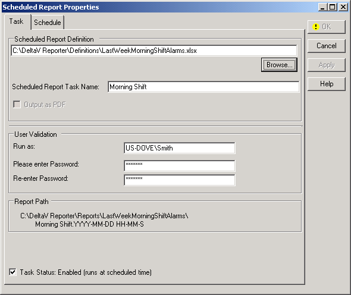

Generate scheduled reports
After creating a report definition file with DeltaV Reporter, you can configure a scheduled report that will be automatically generated at the frequency you specify. A report definition file is a Microsoft Excel workbook containing DeltaV Reporter worksheet functions.
Report definition files
The DeltaV Reporter setup program creates C:\DeltaV Reporter\Definitions as the default folder for report definition files. The setup program also copies some important sample Excel workbook files into the C:\DeltaV Reporter\Definitions folder. You can use these as examples of using the DeltaV Reporter worksheet functions and as templates to create report definition files for automatically generating scheduled reports from the Event Chronicle database. Depending on which version of Excel you are using, report definition files can be saved in .xls, .xlsx, .xlsm, or .xlsb format. There are important system configuration settings required to automatically generate scheduled reports.
Scheduled report files
Depending on the file format of the report definition file, a scheduled report is saved as an Excel workbook .xlsx file or as a Portable Document Format (PDF) file that can be viewed in Adobe Acrobat Reader.
Scheduling a report
To configure an automatically generated scheduled report, perform the following steps:
- Start Microsoft Excel.
- On the Add-Ins tab, in the DeltaV group, click Scheduled Reports. This opens the DeltaV Scheduled Reports dialog.
- Open the Scheduled Report Settings dialog by clicking Settings.
In the Scheduled Report Settings dialog, enter or use the Browse button to specify the full path to the folder where you want to save automatically generated scheduled reports. The default folder for saving scheduled reports is C:\DeltaV Reporter\Reports. All scheduled reports are stored in subfolders of C:\DeltaV Reporter\Reports or in subfolders of the folder you specify. Subfolder names are based on the name of the report definition file for the scheduled report.
Note: If you change the folder in which to save automatically generated scheduled reports, the change applies to all scheduled reports that you configure. However, after changing the folder, any scheduled report already generated is not moved.You can also specify the maximum number of scheduled reports to save before deleting older files. The default is 100 for each scheduled report generated from an individual report definition file. For example, if you configure three separate scheduled reports, each automatically generated once a week from a different report definition file, and specify 52 in the Maximum number of each Report Type field, a year's worth of each scheduled report is saved before the oldest file is deleted. However, if two of the scheduled reports are generated from the same report definition file, only six month's worth of each of these two scheduled reports is saved before the oldest file is deleted. It is not possible to specify a different maximum number of scheduled reports to save on a report-by-report basis.
- Open the Scheduled Report Properties dialog by clicking Add Task.

On the Task tab of the Scheduled Report Properties dialog, you can specify the following:- Scheduled Report Definition – Enter or use the Browse button to specify the path and name of a report definition file. The default folder for report definition files is C:\DeltaV Reporter\Definitions.
- Enter a descriptive name for your scheduled report.
- Enable or disable the Output as PDF option, if available.
- Enter User Validation credentials with which to run the task to automatically generate the scheduled report.
- Check or clear the Task Status check box. If you suspend automatically generating a scheduled report by clearing this check box, you can re-enable it at a later time either here, in the Scheduled Report Properties dialog, or in the Windows Task Scheduler application.
Note that the generated name of the scheduled report appears in the Full Report Path File Name area. The default folder for scheduled reports is C:\DeltaV Reporter\Reports. Scheduled reports are stored in a subfolder with the same name as the base name of the report definition file. Individual generated file names are based on the descriptive name you specify, followed by a time-date string of the form YYYY-MM-DD HH-MM-SS, followed by the appropriate file format extension, .xls, .xlsx, or .pdf.
Tip:If the scheduled report file name appears truncated on the Scheduled Report Properties dialog, you can click the file name and then scroll to the end using the RIGHT ARROW key.
- To set up the frequency with which to automatically generate the scheduled report, click the Schedule tab on the Scheduled Report Properties dialog. On the Schedule tab, you can specify how often and at what time of the day to generate the scheduled report on a one-time, daily, weekly, or monthly basis.